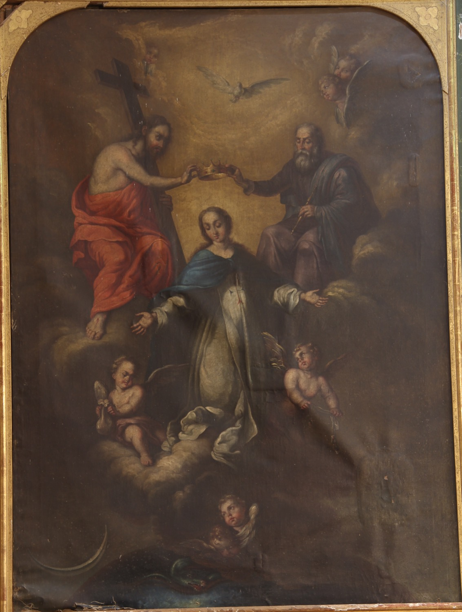

La Virgen del Remedio es la advocación mariana patrona de la Orden de la Santísima Trinidad y de la Redención de Cautivos, conocida también como la Orden Trinitaria. Como indica el nombre de la orden, los trinitarios se dedicaban principalmente a la liberación de cristianos cautivos e invocaban a la Virgen del Remedio como intercesora para obtener los fondos y la ayuda necesarios para llevar a cabo su misión.
En esta pintura de Agustí Buades i Muntaner (s. XIX), la Virgen aparece vestida de blanco con una cruz azul y roja sobre el pecho, símbolo de la Orden Trinitaria. Es coronada como Reina del Cielo por la Santísima Trinidad, elemento fundamental de la espiritualidad trinitaria. Uno de los angelitos que la acompañan sostiene en sus manos la “bolsa del dinero de los cautivos”, otro de los símbolos de la Orden Trinitaria, que representa el dinero procedente de limosnas y donaciones que los trinitarios usaban para rescatar a cristianos cautivos. Además de los elementos propios de la advocación trinitaria, la pintura también incorpora algunos símbolos habituales de la Inmaculada: el manto azul, símbolo de celestialidad; la luna, símbolo de pureza; y la serpiente sometida bajo los pies de María, símbolo del pecado original vencido.
Según el P. Andreu de Palma, la popularidad en Vilafranca de la Orden Trinitaria, a la que está dedicado este altar, se debe a la influencia del P. Miquel Mestre, natural de la villa y una figura destacada de los trinitarios mallorquines del siglo XVIII. Llegó a ser superior de dos conventos en Palma: el de Santa Catalina y el del Santo Espíritu (actual San Felipe Neri).